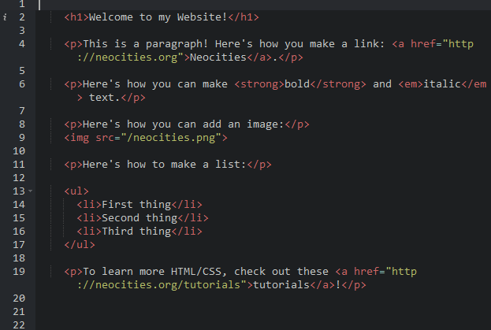
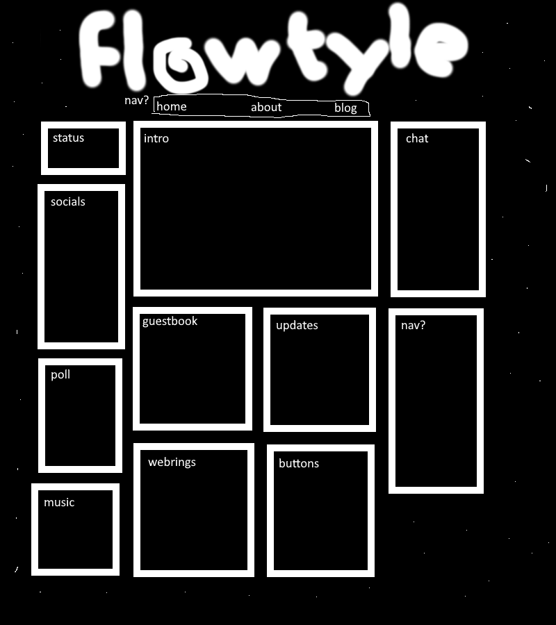

how i made this site
2024 November 27i probably should've made this after the first blog post but never late then never i guess
HOW DO I MAKE A WEBSITE I HAVE NO IDEA WHAT I'M DOING HELP
making a website is not hard at all. the hardest part is when u start but when you have a functional website, adding to it is very easy. in this blog post i'll share the process i did when making my mid website.
first all go to neocities/nekoweb to pick a name for your website! you can change this anytime but it will break search engines and links. once you've made ur account it's time to start coding right?
NO!!!!!
STEP 1 - webinspo
you can make your account but don't go straight into coding!! you don't even know what u want ur website to look like!! instead browse neocities and nekoweb for webinspo! if you want websites to look at i suggest sugarforbrains and cinni. sugarforbrains is kinda based on old flash websites for kids? and cinni is very consistant and uses a pixel art style. look at other sites though!!!!!!!!
when i was looking for webinspo i noticed some things that i might want on my website, such as an update log or guestbook. i literally typed these in my notes app so i wouldn't forget.
now once you've taken some inpso it's time to...
STEP 2 - draw that shit!!!!!!!!!
get ur pen and paper or ur mouse and monitor and draw a sketch of the first page (which is called the index page). i don't have the sketch i did but i recreated it down here.
this is roughly what the sketch of my site looked liked. it looks like absymbal dogshit but that's the point. just focus on the layout and what u want the concept of the site to look like. worry about graphics and stuff later. keep in mind this sketch and my website layout is VERY basic. this isn't what ur site should look like unless u want to
u can sketch the other pages of ur site aswell. again my site is very basic so i didn't
now that you've got some ideas, sketched them out, it's time for the scary part
STEP 3 - HOW DO I CODE
so there's two ways of doing this. u can either raw dog it (which is what i did) or you can use sadgrl's layout builder
if u look at the layout builder you'll see some common tropes. u can see the code of the layout by right clicking and clicking inspect. u can also look at the code below.
first of all, all of the visible code of the website is contained in the <body> tag. this is basically the content of the site.
the <head> tag is used for linking other files, the title of the tab, and meta tags. u can ignore it for now, just focus on the body tag.
most websites should have a <header>, <main>, and a <footer> tag within the body tag
the <header> tag is used for header images/logos, and a navigation bar if u like.
the <footer> tag is used for small info about the website.
and the <main> tag is used for the main content of ur site.
finally we're at the point where we have to learn how to code. it's honestly not as hard as it seems. if you've seen some things from looking at other websites maybe try inspecting the code to see what they did?
for now i'm going to go over what i think are the most important things are for making a website, starting with...
<p> tags
these are the most basic of tags and they're used for normal text. for most tags u type the tag, then the same tag again with a slash at the start, and your content goes between the tags. of course you could just not use the tag and it might appear fine but you'll come into some issues later on, specifically with stylising. u can also put other tags in this tag, such as...
<a> tags
these are anchor tags! or basically link tags. u can use these to link to other websites or other pages on ur website.
<h> tags
these are header tags which go from h1 to h6 (h tag doesn't exist). these have preset stylisation with h1 being the biggest and h6 being the smallest. for my website i only use h1-3. u can stylise these tags yourself to look different than the default stylisation. (which u can also do to other tags as well)
<img> tags
these are image tags! upload the image onto ur website using the ui and u can link to it! this tag doesn't have an ending tag. u can also add alt text for screen readers.
<div> tags
these are basically boxes to limit text. however u will have to stylise it as there's no stylisation associated with it. idk how to describe it other than a box sorry
there are a lot more tags that u can look up. some tags have no functionality (e.g. <aside>) for accessibility. i reccommend w3schools for learning about html.
i mentioned stylising a bit but what does that mean? well u can add style="" to tags to stylise them, but i don't reccommend it unless it's for a couple lines for specific tags.
ur website should have a style.css file. on neocities ur index.html file is linked to it through the <head> tag. if u look at the file it will look something like this.
this is a different language than html called css. every tag is basically a class that you can add properties to. u might not know what that means but don't worry it's pretty simple.
there are a lot of properties u can use such as background-color, color (color of text), font-family, width, height, etc. again look at some other websites and look at the css and try changing it to see what each property does.
u can also use classes or id's for specific html tags. classes is for multiple tags and id's are for single tags. u can refer to classes with a . and ids with a #
that's an unordered list by the way, it adds bullet points. also for colors there are some preset colors but u can also use hex codes or rgb. again look it up using w3schools.
STEP 5 - i made a website! & ending notes
using these tips and some googling u should be able to make a website! make sure u save and wait a while to view the changes! u can also use hard refresh (CTRL+R) to hard refresh the website.
now if u hate the website ui for coding or want ur website to be not viewable when ur working on it i would reccommend using an editor! i use vscode and i reccommend it. u can use liveserver to view the website, and on neocities u can use neocities' CLI to upload to neocities!
u can also use vscode to upload to a github repo and use deploy to neocities to upload ur website to neocities when u upload to the repo!
lastly if u find urself repeating elements in every page u can use a static site generator! this is somewhat advanced but once u set it up it making a website is pretty nice! again if u don't repeat elements this isn't necessary
i use 11ty but there's a lot of opitions, i just found it the most popular on neocities. u can look at my first blog post for some links to tutorials. i would probably not reccommend u start with it though and u might not need it at all. i mainly used it for repeating the header and footer, and for my blog.
ok that's all i have to say. obviously u don't have to follow this tutorial but i hoped this helped somewhat. sidenote i have three blog posts now which is the max shown on my home page! so now there's no more empty space. anyway that's all cya